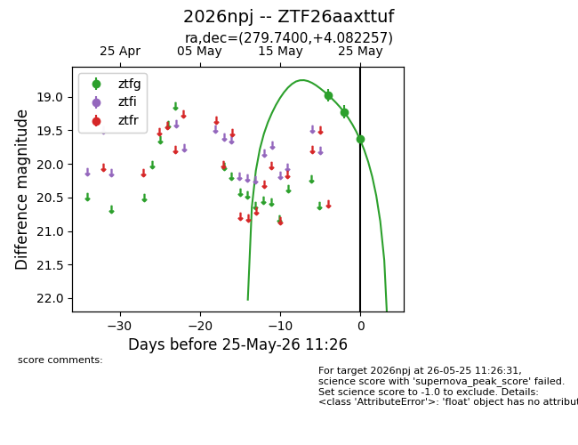
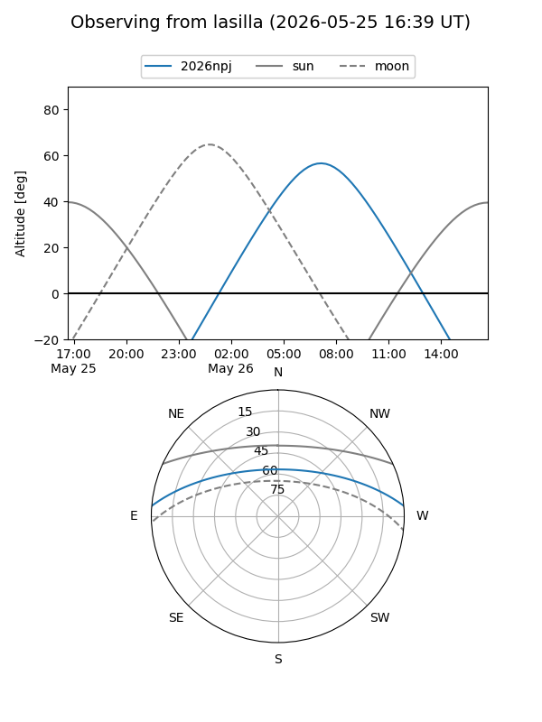
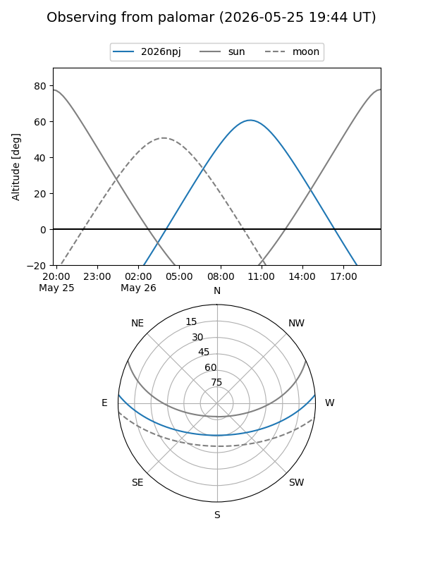
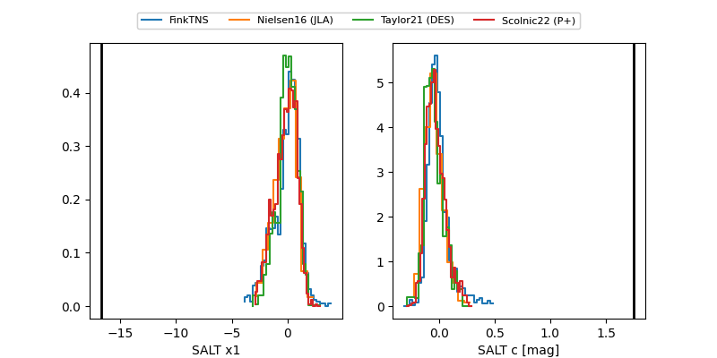

2026npj
Target 2026npj at 2026-05-25 11:27
Aliases and brokers:
lsst-FINK: link
lsst-Lasair: link
lsst-ALeRCE: link
ztf-FINK: link
ztf-Lasair: link
ztf-ALeRCE: link
TNS: link
YSE: link
alt names
ZTF26aaxttuf (ztf,fink_ztf)
2026npj (tns,yse)
Coordinates:
equatorial (ra, dec) = 279.7400,+4.08226
equatorial (HMS+DMS) = 18:38:57.61,+04:04:56.13
galactic (l, b) = (35.1517,+4.63278)
Flags:
TNS confirmed: nan
Photometry:
last ztfg=19.63
3 ztfg detections
Lightcurve

Visibility


Additional plots
